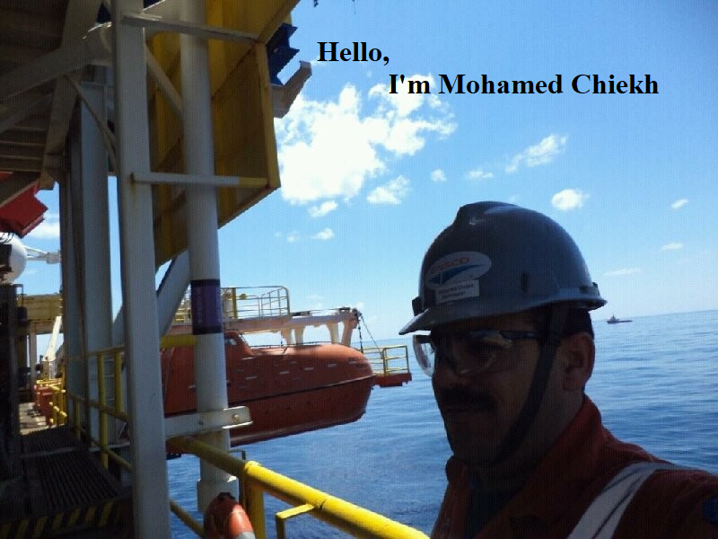

this the home section

this the section about me
Strong can do attitude, and team work builder to achieve operation excellence.
Experienced Storekeeper, Materialsman, Logistics Coordinator
Demonstrated history of working with multinational compagnies in the Oil & Gas industry.
Senior technician diploma Mechanical Engineering, graduated from ISET Nabeul Tunisia.
this the Work section
| Period | Position | Rig name | Location&Project |
|---|---|---|---|
| Aug 2014 to May 2020 | Storekeeper | Valaris 5004 | Offshore Libya - ENI MOG |
| Jan 2014 – Jul 2014 | Storekeeper | ENSCO 5004 | Malta Ship Yard |
| Jan 2012 – Dec 2013 | Senior Materialsman | ENSCO 5004 | Offshore Brazil - OGX |
| Sep 2010 – Dec 2011 | Materialsman | PVZ - Pride Venezuela | Offshore Brazil - OGX |
| Jan 2010 – Aug 2010 | Materialsman | PVZ - Pride Venezuela | Dubai Ship Yard |
| Sep 2008 – Dec 2009 | Materialsman | PSS - Pride South Sea | Offshore South Africa |
| Jun 2007 – Aug 2008 | Logistic Coordinator | PSE - Pride Sea Explorer | SOMASER (PRIDE International Tunisia) |
| Oct 2003 – May 2007 | Storekeeper | BD1 Al Jorf 137 offshore Libya | Meditun - logistics base for Total-Libya |
| Apr 1998 – Oct 2003 | NDT Inspector Lvel II | Tuboser (Oil field inspection services co.) | Sfax - Tunisia |
this the Certificate section
- Emergency Training Valid till 02 May 2021. Course date 03rd May 2017 Yassine Marine Services Sfax Tunisia. OPITO Approved training centre
- Dangerous Goods by Sea Transport IMO Valid till 08-08-2021. Course date 08&09 Aug 2019 RelyOn Nutec Aberdeen UK
- Dangerous Goods by Air Valid till 06-08-2021. Course date 05to07 Aug 2019 RelyOn Nutec Aberdeen UK
- PeopleSoft Storekeeper Certificate July 2014 Singapore - December 2011Brazil
- EAMS Assessment Shopping Cart 23-September-2017